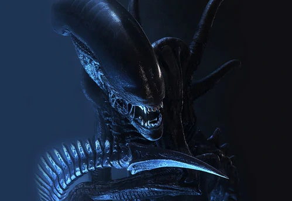
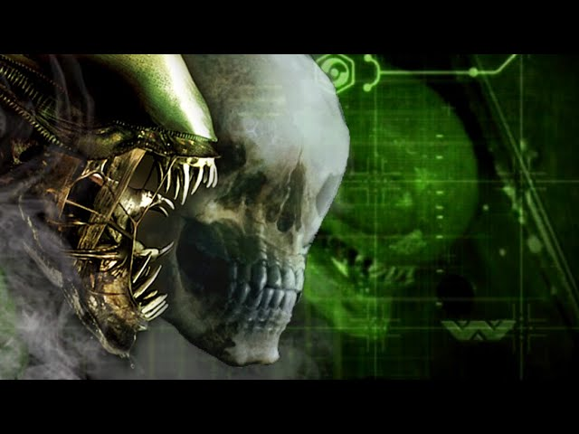

Отчёт об интересах компании
Два века назад мы планировали использовать невиданную мощь этого существа для создания биологического оружия, но теперь понимаем, насколько больше может дать нам этот вид.
Он позволит добиться прорывов в фармакологии, биоинженерии, обороне, подарит нам безграничные возможности, о которых мы не могли и мечтать.
ВСЁ ЭТО МОЖЕТ СТАТЬ ВАШИМ
Инцидент на LV-426
В 2122 году звездолет “Ностромо” первым из кораблей “Вейланд - Ютани” вступил в контакт с ксеноморфом XX121.
Корабль возвращался на Землю после рутинного грузового рейса, когда электронный интерфейс судна вывел команду из гиперсна, зафиксировав передачу, которую он принял за сигнал бедствия.
Проследовав к источнику сигнала, команда обнаружила заброшенный инопланетный корабль, трюм которого был полон яиц ксеноморфов.
Менее чем за двадцать четыре часа ксеноморф убил всех членов команды, кроме одного, продемонстрировав при этом поразительное совершенство своих инстинктов и формы.

Спустя некоторое количество контактов с ксеноморфом XX121 и многих лет, затраченных на изучение данного организма, Вооруженные силы Объединенных систем забирают себе все наши данные и результаты исследований.

Новое начало
За более чем столетние работы с ксеноморфом ВСОС проявили катастрофическую некомпетентность и самоуверенную халатность.
Очевидно, что пришла пора вернуть всю информацию о ксеноморфе XX121 в руки частной компании.
Наши источники во ВСОС обещают передать все данные, связанные с ксеноморфами, и мы готовы тщательно изучить все, что они предоставят, в поисках полезных сведений.
НАУКА ДОСТИГЛА НУЖНОГО УРОВНЯ
Ксеноморф может быть воссоздан
Мы также намерены привлечь независимые команды биологов и наемников для ловли особей.
Учитывая последние достижения в области сверхсветовых полетов, поиски в глубоком космосе должны занять считаные дни вместо недель, недели вместо месяцев.
У нас еще никогда не было настолько серьезных шансов найти и поймать ксеноморфа.

Возможное применение
На борту “Ауриги” доктора Рен и Гидемен провели широкий диапазон простых тестов, считая, что “выдрессируют” ксеноморфов, заставив их подчиняться командам.
Они не увидели открывшихся перед ними огромных возможностей и считали, что лучшее применение ксеноморфов - в качестве солдат.
Но что еще ксеноморфы могут дать нам, попав в правильные руки?
Применение в медицине
Регенерация ксеноморфов гораздо быстрее человеческой, и при всех известных контактах они не проявляли ни следа каких либо болезней.
Первоначальные данные, собранные андроидом Эшем, описывают чужого как совершенный организм.
Детальное изучение генетиками биологии ксеноморфа может стать неоценимым для человечества, если применить его для лечения болезней, продления жизни и в биомеханике.
Военное применение
Представьте, как брызгикрови ксеноморфов поражают вражеские заводы и бункеры.
Если эту кислоту можно хранить, ее потенциально можно сделать частью оружия по тому же принципу, по какому действуют пули с разрывными наконечниками.
Когда мы сможем провести анализ недеградировавших образцов крови XX121, то создадим системы разбрызгивания с учетом их структуры и силы воздействия.
Наука: материалы
Подумайте о сопротивляемости экстремальным условиям, которую проявили ксеноморфы!
Какие прочные, но легкие материалы можно создать на основе ксенотканей!
Понимание химической основы прочности экзоскелета этого организма может дать намнадежную базу для создания материалов всего, от военной брони и защитных скафандров до корпусов исследовательских и коммерческих звездолетов.
Военные: прямой контакт
Имеющиеся данные с корабля “Аурига” заставляют сомневаться, что трутня ксеноморфа можно выдрессировать и сделать солдатом.
Однако высокий интелект королевы чужих оставляет возможность того, что ее можно заставить управлять трутнями.
Но и без этого аккуратное размещение яиц ксеноморфов на территории противника позволит уничтожить целые вражеские батальоны с минимальным риском для наших солдат.
Как вариант, бойцы противника могут быть заражены и отпущены к своим товарищам.
Чем вы можете нам помочь?
Цель этого доклада - познакомить вас с имеющимися у нас скудными достоверными сведениями об этом восхитительном создании.
Используйте эту информацию при принятии решений, связанных с вашим будущим контрактом.
Нам нужны инвесторы, а также ученые, молодые умы, из многочисленных категорий научных исследований.
Если вы не являетесь ученым или не имеете возможности стать инвестором, но хотите быть частью грандиозных открытий, не отчаивайтесь, мы найдем для вас место.
Как обычно, компания оценит ваш вклад и вашу преданность.